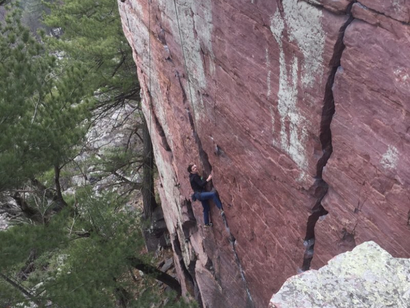

Below are a list of hobbies that I partake in...
- Rock Climbing
- - Bouldering short walls without ropes, using pads to cushion falls.
- - Lead Climbing with a rope that you clip into anchors on the way up
- Music
- - Producing music using audio recording equipment and software.
- - Playing electric guitar and learning new songs.
- Exercise
- - Going for runs
- - Lifting weights at the recreation center.
